Jira_with_PowerBI
1. Introduction
Jira itself can perform several analyses for project management. However, if we import data into Power BI, we can perform more in-depth and flexible analyses. Since there is no complete tutorial online, in this article, I’ll share a complete step-by-step tutorial on how to import data from Jira into Power BI and also how to solve the refreshment problem.
2. Generate Jira Token
We need to first get the Jira token to connect to Power BI.
Go to Manage API to generate Jira Token. The token won’t expire unless you revoke it.
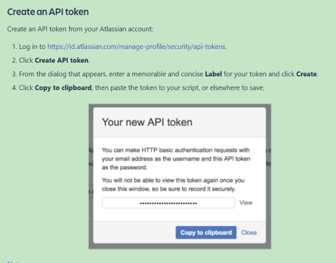
3. Convert Token to Base64 format
After getting the token, the next step is to convert it to base64 format.
This can be done in two ways:
- Use this excel file Base64Encode.xlsm (Reference: Encode Base64 in Excel VBA - YouTube).
- Use this Python code jira_api_turtorial.ipynb.
4. Import Data into Power BI
One limitation of using Jira API to ingest data is a single API call restricts to a maximum of 100 subsequent records to be retrieved. To retrieve all records, multiple smaller requests are made using the API and Pagination. (Reference). Following steps will show you how to do it step by step.
Select ‘Transform Data’ to open the Power Query Editor. (Reference)
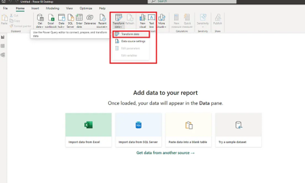Create a “New Group” and name it “Jira”
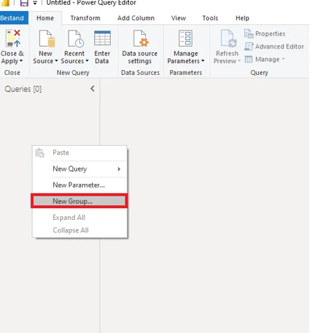In the Jira group (folder) create a Blank Query and then right click it to open the query in the ‘Advanced Editor’.
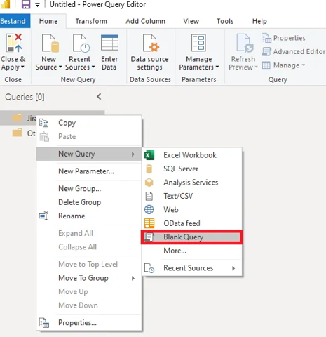
Replace the code with this code in the Advanced Editor.
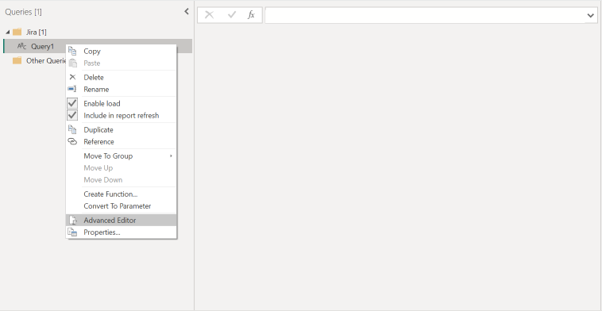
After replacing the code, we need to do some modifications.
First, replaceihhgroupdatawith your company domain name.
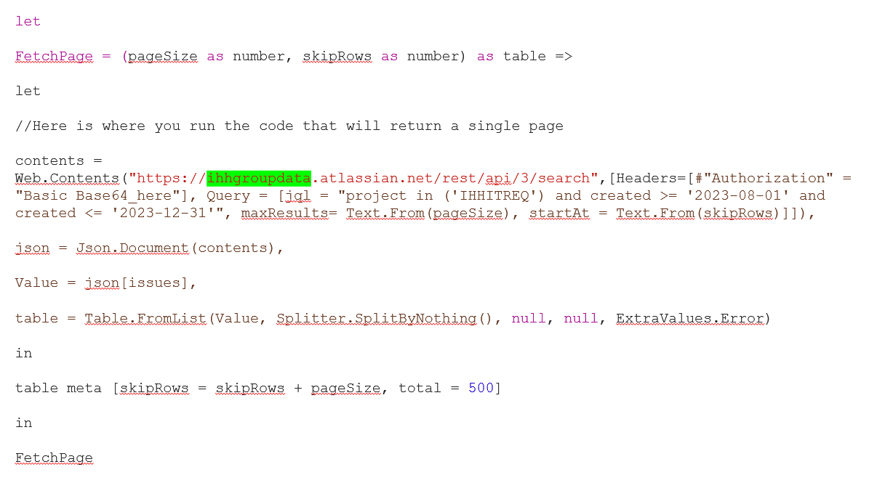
Second, replace theBase64_herewith the base64 encoded string that was generated in Section 3. Remember to keep theBasicin front of it. (Make sure you keep a space after Basic) 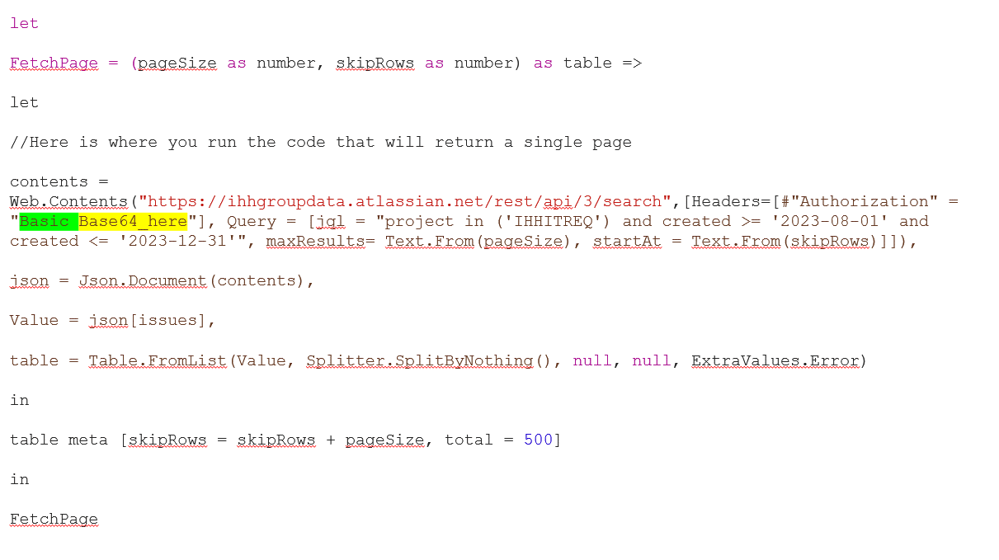
Third, replace IHHITREQ (E.g. Or your JIRA Project) with your project key. (Your key can be found in your Jira website.) If you want to further include more projects, you can do like this: project in('IHHITREQ','project1','project2')
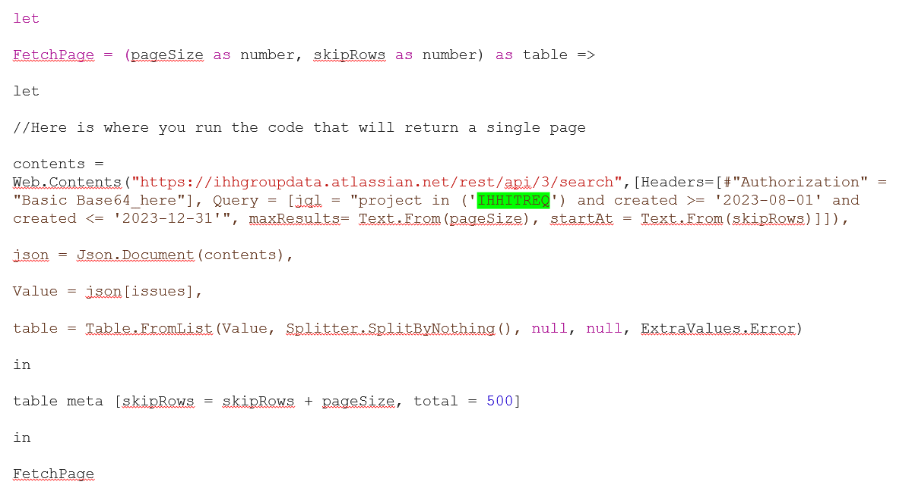
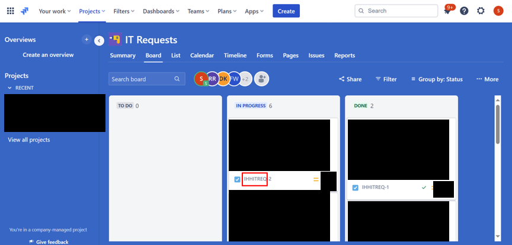
Fourth, you can also change the query to your desired data range by modifying this part.
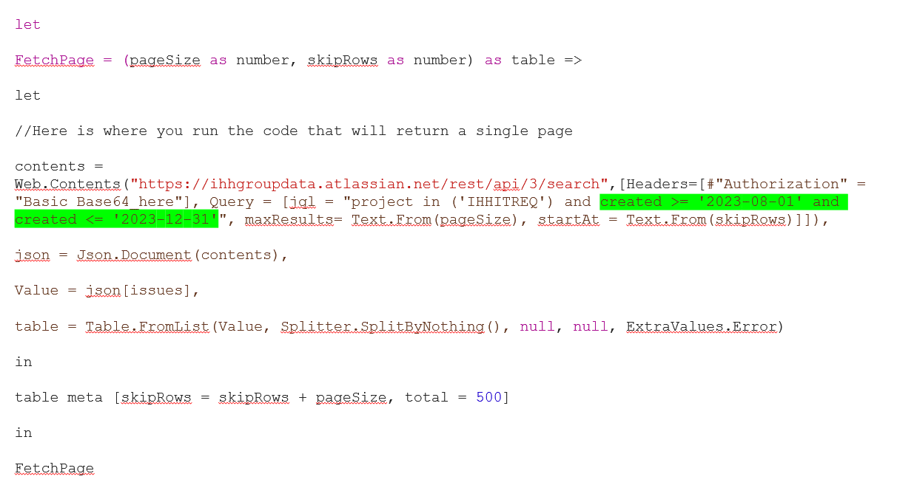
When done rename the query toFetchPage.Create a second query and rename it to
FetchPagesand copy the following code into it.If an error pops up with the following message ignore it — this will be solved after creating (and renaming) the third query: Expression.Error: The name ‘GenerateByPage’ wasn’t recognized. Make sure it’s spelled correctly.
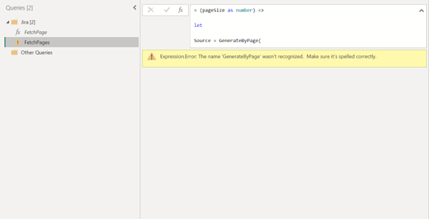Create a third Query and rename it to
GenerateByPage.The result queries so far should be:
FetchPageFetchPagesGenerateByPage
The final step before the data can be used in PowerBI is to invoke the ‘FetchPage’ query. Input 50 in pageSize window and click Invoke button.
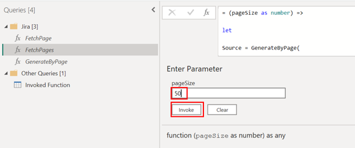If this error pops up, please click
Edit Credential.
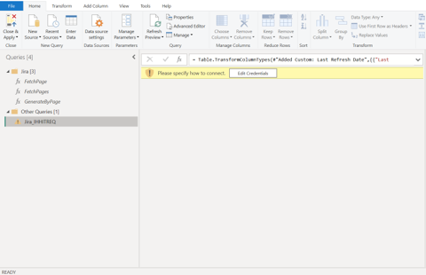
And then use this setting to connect.
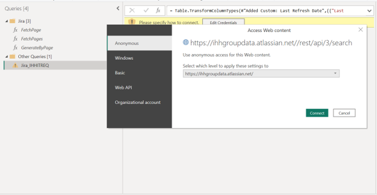After invoking the query, query result should pop up. Based on your need, you can expand columns and do your own data transformation. 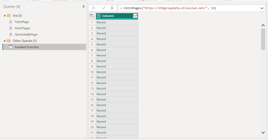
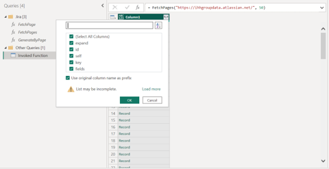
5. Publish and Set Schedule Refreshment
After you finish your dashboard and publish it, you may encounter this refreshment problem.
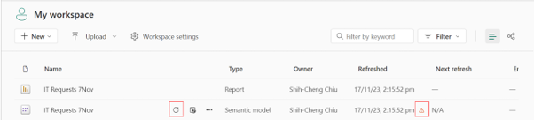
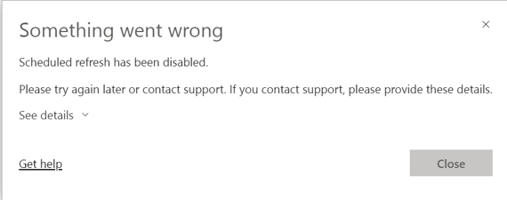
To solve it, click on the three dots and select Settings.
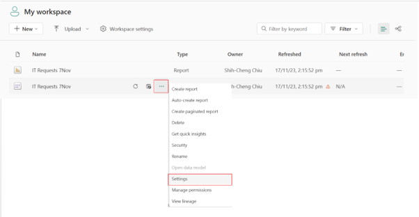
Find the Data source credentials option and click Edit credentials.
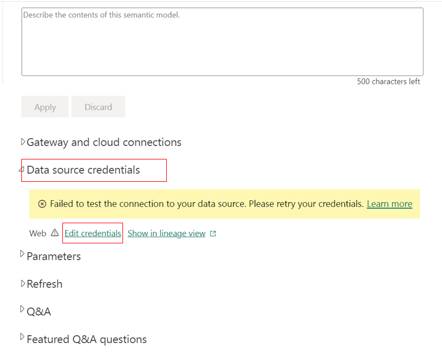
A window will pop up. Fill in the windows like below and click Sign in.
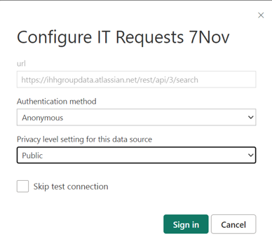
Find the Refresh option, which is located under the Data Source Credentials option we just used. Turn on the Refresh option and configure it based on your needs.
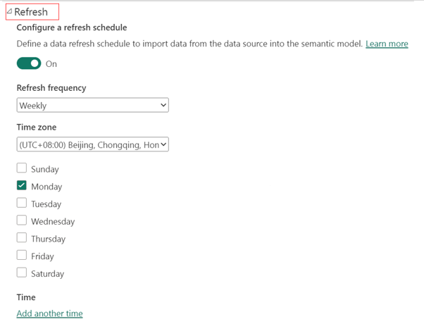
After applying the settings, try refreshing your report again. It should work fine now.
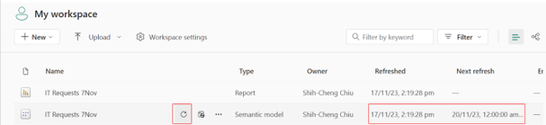